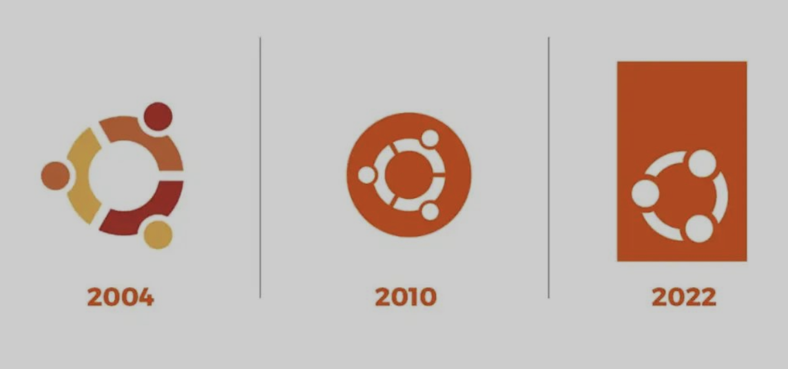
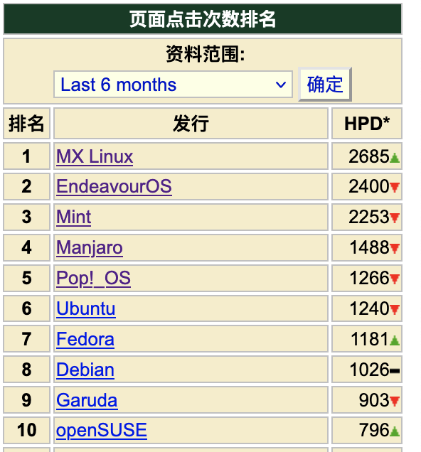
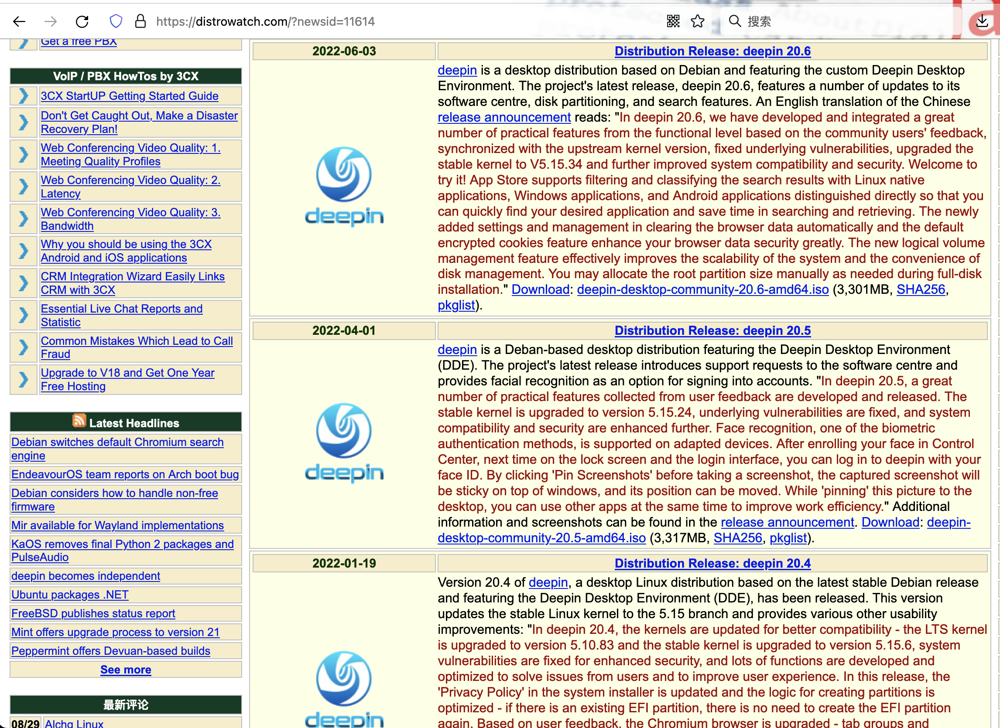
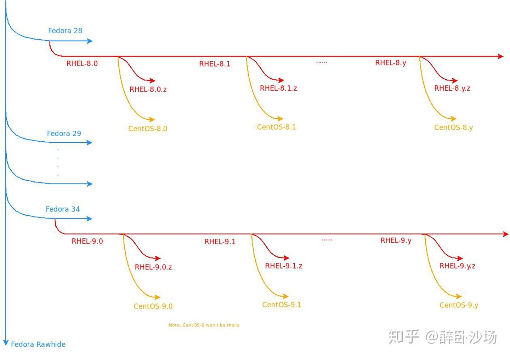
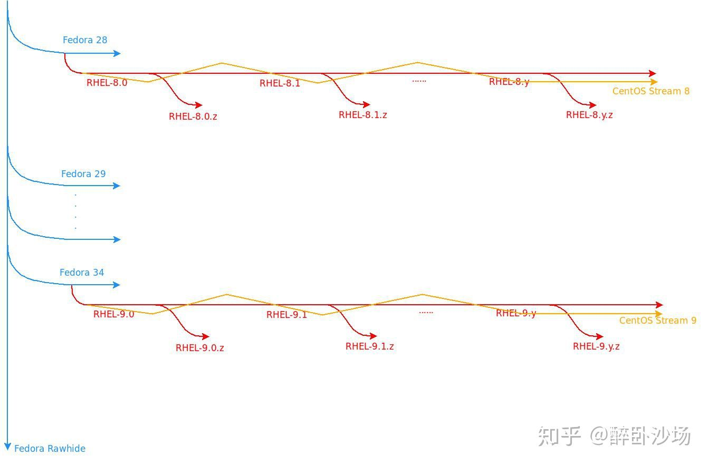
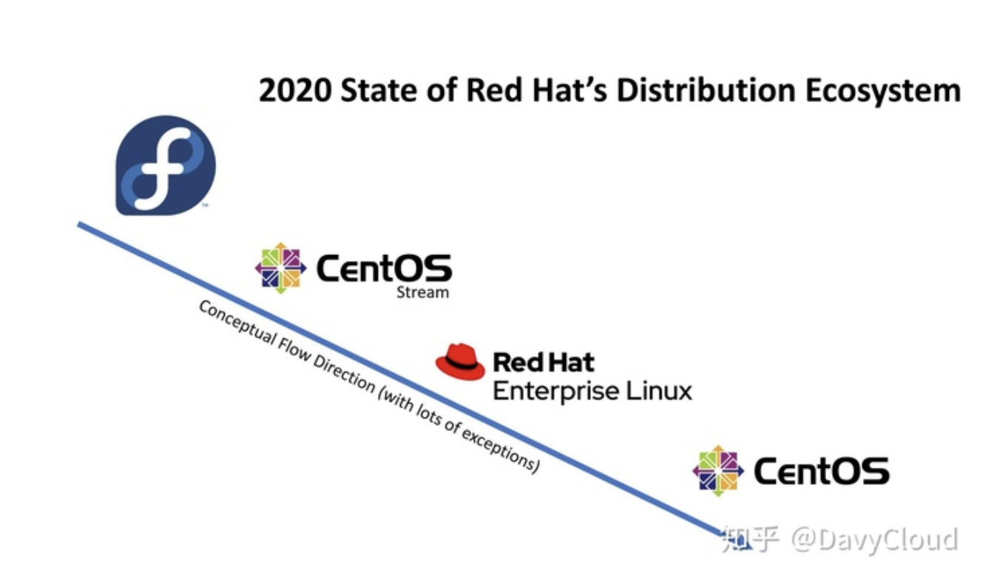
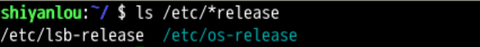

查看发行版 distro
回忆上次内容 😌
-
- 我们使用
- uname -a
- 可以查看系统详细信息
- 除了内核之外
- 还有发行版
- 研究了linux发行版
- distro
- 研究了Debian家族
- 以及ubuntu
- ubuntu来自于canonical(经典)公司
- 这个公司怎么挣钱呢？🤔
- 那资金从哪里来？
现金来源
- Canonical 公司的现金主要来源于
-
服务器集群管理工具 Landscape 的服务支持
- oem 设备的预装系统费用
- Ubuntu 软件中心的付费位
- 代码托管平台 launchpad.net 服务费用
- 亚马逊云的相关广告
- Ubuntu 手机预装软件收费
- 甚至 CD 包内容都可以自己定制
-
Ubuntu定位是
- easy-to-use Linux desktop
- 好用的linux桌面
- 难怪我们的实验楼选这个
-
Ubuntu 是非常流行的发行版
- 整体上来说善于推广
- 比较讨巧
logo
- Ubuntu 是 Canonical 公司

- 在 debian 稳定版 (stable) 基础上做出的发行版
- 私营公司做开源软件为什么许的呢？
开源和商业
- 开源和商业并不是非黑即白的
- ubuntu 在免费的debian的基础上开发了收费的版本
- 收费有利于市场扩张
- 增大份额
- 有助于debian家族的存在与发展
- 著名的黑客埃里克·雷蒙德（Eric S. Raymond）曾说
足够多的眼睛，就可让所有问题浮现。”Linux开放源代码，全世界的程序员都看得到，有什么缺陷和漏洞，很快就会被发现，从而成就了它的稳定性和安全性。
风味(Flavor)
- ubuntu再派生出各种倾向性的风味distro
- 各种桌面的风味
- 面向设计师的
- Ubuntu Studio
- 中文风味
- 优麒麟
- 很流行的发行版都基于ubuntu
- Pop！
- Mint
Mint
- 前十基本都出自debian家族

-
Mint 是基于 Ubuntu 的
- Ubuntu 是基于 Debian 的
- 所以 ... Mint 很年轻
- Mint 也是长期霸榜的存在
- 收入主要靠 t 恤和赞助
-
你想过做自己的发行版吗？🤔
国产 Deepin 深度
优点
- 好看，特效非常好，渲染的也非常棒。
- 贴合 🇨🇳 国人的使用习惯，有专门的软件商店，轻松安装 QQ、搜狗输入法、WPS 等
- 也曾常年前十，靠得住，爱酷炫界面人士可以用
- 仓库从 Ubuntu 切换到了 Debian,更稳定
- 统信Uos是基于deepin的
缺点
- 绚丽的 图形效果需要占用 cpu 内存
- 不要被眼睛迷住
- 忘了其实 Linux 的最关键的是命令行⌨️
深度背景
- 这个发行版背后的公司是武汉深之度科技有限公司
- 成立于 2011 年
- 是专注基于 Linux 的操作系统研发与服务的商业公司
- 公司的主要产品为深度操作系统

- 诚迈科技和原来的深之度
- 股权由
- 星辉 360
- 深度
- 绿盟
- 合成了新公司
- 股权由
Kali🤪
- Kali
- 是一个基于 Debian 的 Linux 发行版。
- 他在 Debian 的基础上装了好多工具
- 把你的笔记本变成黑客工具。
- Kali 可以有效的学习相关知识
- 不过要小心：
- Kali 用的好
- 牢饭吃到饱
- debian家族就说到这里
- 我们看看下一个家族
Red Hat 家族 Rhel⛑
- Rhel 就是
- Red hat enterprise linux
- 是最早的商业发行版
- 1994 出现
- 99 年上市
- 首日收益历史第八
- 2012 年 10 亿美元回报
- 在商用服务器上使用非常多
- Centos、Fedora、Mandriva 等免费发行版都基于 Rhel 企业版收费版的
- 免费版还能基于收费版？
- 我们来看看：
Fedora
-
Fedora 是 Rhel 的实验室。
- 学了 Fedora 就等于学了 Rhel
- 各种靠谱不靠谱的功能都往上招呼
- 你可充分的尝鲜
- 社区很强大
-
Fedora 一直沿着开源思想之路
- 发展
- 开放
- 测试
- 改进
- 最终稳定下来、靠得住的新特性
- 进入 Rhel
Rhel红帽本体
- 红帽的名字跟它的创始人有关
- 它的创始人 Marc Ewing 在 cmu 读书的时候
- 就以在校园里面帮人解决 Linux 问题而闻名
- 所以当时 cmu 校园里面流传着一句话
- 遇到了 Linux 问题
- 就去找那个戴着红帽子的人来解决👍
- MarcEwing 和 Bob Young 一起创建了自己的 Linux 发行版
- 并将其命名为红帽。
红帽的共享
-
红帽技术很强
- 对各种开源技术贡献都很大
- 对于内核有很大贡献
- 用商业推动各种硬件的 Linux 驱动
- 红帽加入 RISC-V 基金会
- 红帽有自己的认证
- 这个对于从业人员是一个涨工资的说法
- 各种教材资料也特别多
-
红帽工作时间可以答疑的那种标准服务 799 美元一年
- 高级会员 1299 美元一年
-
当然还有更厉害的企业级别的合作
- 总之红帽年收入超过 20 亿美元
-
红帽市值非常高
- 已经被 ibm 的 340 亿所收购
- 免费的发行版怎么还能基于这么成功的商业公司
- 不侵权吗？
Centos
- Linux 发行版本身是没法收费的
- 因为根据 GPL 协议你必须公开源代码
- 你收费了
- 别人直接拿源代码自己编译一个用就完了
-
Centos 就是编译之后的 Rhel
-
把开源软件 Rhel 编译之后形成的东西
- 再做成一个发行版就是 Centos
- 一般来说社区版 Community 开源免费
- 企业版 ENTerprise 收费
- 而 centos 想把强大的企业版功能和免费开源的社区放在一起
- Centos 都是在对应版本的 Rhel 出来后隔段时间才出的
- Centos 的代码与 Rhel 完全一致
- 只是修改为符合开源协议的版本
- 以及修改发行版名称和源等内容
- 把收费的组件和客户的支持都去掉了
支持
- 目前centos现状
- 国内云服务器对 Centos 支持很好
- 国内的云服务器 Centos 数量居多
- 对于运维人员的培训，Centos 居多
- Centos 影响力太大
- 红帽把他收购了
- 里面有什么交易不知道
- 反正 Centos 加入了红帽公司。
- Centos 作为免费的基础部分
- 获得大量用户基础和好评
- 为 Rhel 占下市场份额
- 降低学习成本
- 这样的话，Centos 和 Rhel 越来越一致也就很正常了
centos 的演化
- 原来centos是rhel的下游
- 很多人都可以免费使用rhel
- 但是这样的生态对于rhel没有办法形成反哺
- 一些用户反馈和测试无法回馈社区
- 而是纯吸血

- ibm收购红帽之后
- centos无法提供kpi
- 需要centos给rhel有益反馈
最新变化
- 这样会引来更多的进一步开发

- 这样centos就可以进行版本测试
- 回馈社区了

Suse 家族
Suse[ˈsuːsə]
-
Suse 是德国 🇩🇪 SUSE Linux AG 公司发行维护的 Linux 发行版
- 是属于此公司的注册商标
- 第一个版本出现在 1994 年年初
- 2004 年这家公司被 Novell 公司收购
-
Suse 最早基于 slackware, 后来就不是了
- 公司位于德国
- 代码严谨，质量高。
- 华为、中兴、腾讯背书
- 不太重视中国市场
- openSUSE 是 Suse 的社区版本
其他Linux
- Google 的安卓
- 三星的 Tizen
- Ubuntu touch📱
- Lg 的 webos
- Firefox OS🦊
- 太多了
也还有其他类 UNIX（Unix-like）系统 🖥
- UNIX
- Bsd
-
Solaris
-
那我们怎么才能知道当前发行版的版本呢？
版本号
首先要知道发行版的版本号在哪里
ls
ls就是list列表 命令- 列出目录下有什么
- 把哪里的文件列表呢？
ls /etc/*release
- release
- 是编译之后的发布版
发现
ls是list命令的缩写-
/etc/*release是ls命令的参数/是整个文件目录的根（root）下/etc是根（root）下的etc文件夹下/etc/*release是根（root）下的etc文件夹下的- 所有以
release结尾的文件
-
这条命令就是
- 列出根（root）下的 etc 文件夹下的
- 所有以 release 结尾的文件
- 发布版信息

我们可以发现有两个文件
- /etc/lsb-release
- Linux Standard Base
- /etc/os-release
- Operating System
cat 命令
- 然后我们要看这些文件里面的内容
- cat 就是可以查看文件的内容
cat /etc/lsb-release
cat /etc/os-release
- 我们也可以把这两个拼合在一起查看
cat /etc/*release
发行版解析

- 我们可以看到当前的发行版是Ubuntu
- ubuntu是基于debian的
- Ubuntu的版本是20.04.2 LTS
总结
- 我们研究了三大发行版家族
- debian
- 红帽
- suse
ls- 是
list的意思
- 是
ls /etc/*release
cat /etc/*release
cat- 是
concatenate的命令的缩写
- 是
/etc/*release- 是参数
- 指的是根（
root）下的- etc 文件夹下的
- 所有以
release结尾的文件
- 所有以
- etc 文件夹下的
- 整个命令是要把根（
root）下的etc文件夹下的- 所有以
release结尾的文件内容
- 所有以
- 拼合输出
- 这样我们就知道当前发行版的版本了。👍
- 那我怎么知道我目前在哪呢？🤔
- 下次再说👋🏻